Кейс: как провести анализ конкурентов с помощью SimilarWeb
Какие каналы используют конкуренты для привлечения посетителей? В каких регионах наибольшая и наименьшая конкуренция? Перед запуском проекта нужно знать предельно четкие ответы на эти вопросы. Сегодня я расскажу, как быстро провел конкурентный анализ для сервиса автоматизации SMM.

Как найти своих конкурентов?
Сервис специализируется на подготовке и постинге контента в соцсетях — довольно непростая тематика для поиска конкурентов. В общих ситуациях существует ряд несложных рекомендаций для поиска и анализа конкурентов:
- Посмотрите, кто ведет рекламу по наиболее релевантным вашей тематике поисковым запросам в Google и Яндекс.
- Вбейте свой адрес в SimilarWeb и посмотрите список похожих сайтов.
- Воспользуйтесь функцией сравнения доменов в сервисе Serpstat.

В этом кейсе я использовал только SimilarWeb, так как хотел проверить, можно ли провести полноценный конкурентный анализ с помощью бесплатных инструментов.
Собрав стартовый список конкурентов, разделите их на сегменты по любому признаку. Я разделил на глобальных и локальных.
Глобальные конкуренты:
Локальные конкуренты:
Как собрать данные о конкурентах?
После составления списка интересных и значимых конкурентов, а также разделения их на нужные сегменты, начинается процедура сбора данных. Сразу оговорюсь, что данные SimilarWeb не будут достоверными на 100% — существует определенная погрешность, но в целом вы сможете проследить динамику и выявить лидеров отрасли.
- Переходим по ссылке и в область поиска сайта вбиваем домен первого конкурента. После этого SimilarWeb предоставит нам достаточно много интересной информации о его сайте.
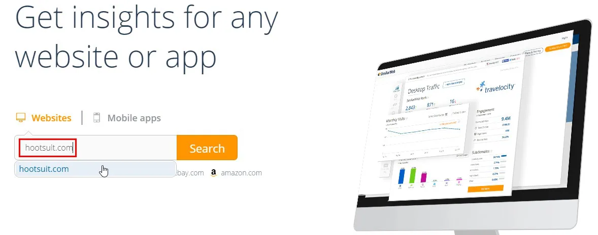
1.1. Общая информация о посещаемости сайта за последние полгода.
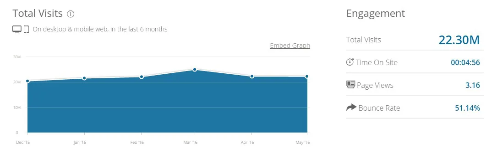
1.2. Данные о геолокации пользователей по пяти основным странам.
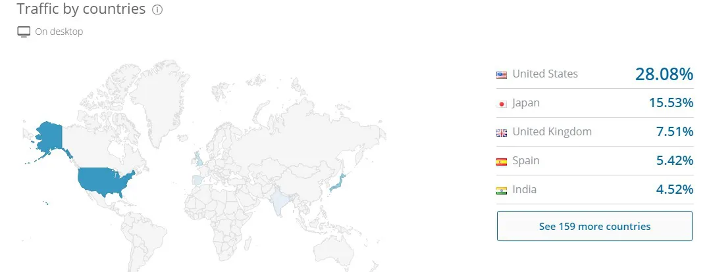
1.3. Источники трафика.
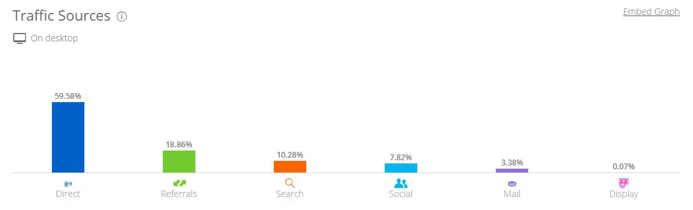
А также много другой полезной информации о платных и бесплатных поисковых запросах, переходах из социальных сетей и так далее.
- Всю необходимую информацию о конкурентах собираем в любом доступном редакторе электронных таблиц (например, таблицах Google или Microsoft Excel). Этот процесс займет некоторое время, но в дальнейшем вы сможете строить графики и отчеты на основе собранных данных и принимать обоснованные решения при выборе каналов и региона продвижения бизнеса. Пример таблицы с информацией о конкурентах:
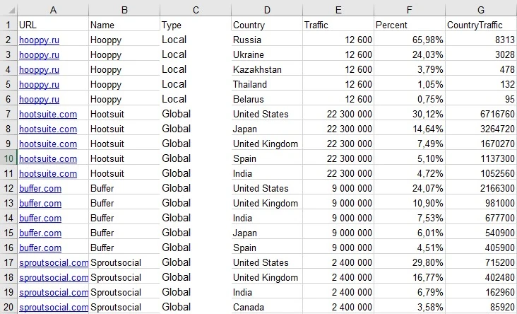
Продумайте структуру таблицы, чтобы она была пригодной для дальнейшего построения сводных таблиц и диаграмм. Более подробно о том, как быстро получить из подобного массива информативные отчеты, читайте в публикации «Как строить сводные таблицы в Excel, Google Таблицах и LibreOffice».
Какую информацию собираем?
На примере выбранной тематики я покажу, какую информацию о конкурентах вы можете извлечь с помощью бесплатных инструментов.
1. Объем трафика конкурентов, динамика развития площадок
1.1. Глобальные конкуренты
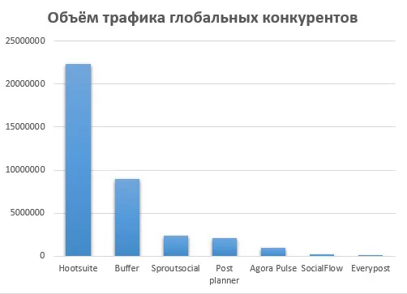
Безусловный лидер — платформа Hootsuite. Объем трафика этого сервиса в апреле превысил 20 млн сеансов. Вторую позицию довольно уверенно держит Buffer с объемом трафика в 9 млн. Остальные платформы значительно уступают лидерам.
1.2. Локальные конкуренты Среди локальных конкурентов четко выражены четыре лидера. Между ними есть существенный разрыв в объеме трафика, поэтому, скорее всего, они не поменяются местами в ближайшее время.
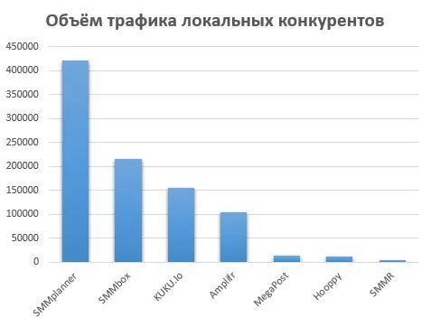
Первое место по объему трафика уверенно занимает SMMplanner (в апреле этого года объем трафика составил более 400 тысяч сеансов), второе — SMMbox (с показателем 215 тысяч сеансов), третье место — KUKU.io (150 тысяч). Amplifer на четвертой позиции (объем трафика —104 тысячи), но также с достаточно большим отрывом от ближайшего конкурента. Отдельно хочется отметить, что за последние полгода наибольший рост трафика был у платформы KUKU.io — на 390%, благодаря этому сервис вырвался на третье место. Достаточно активно развиваются платформы Amplifr и SMMplanner: за последние полгода их объем трафика вырос на 200%. Немного меньшего роста добилась платформа SMMbox — 130%. Площадки MegaPost, SMMR и Hooppy в трафике не выросли и достаточно сильно отстают от своих конкурентов.
2. Региональная популярность платформ
2.1. Глобальные конкуренты Практически половина трафика глобальных конкурентов приходится на США, на втором месте — Япония, далее — Англия, Индия и Испания.
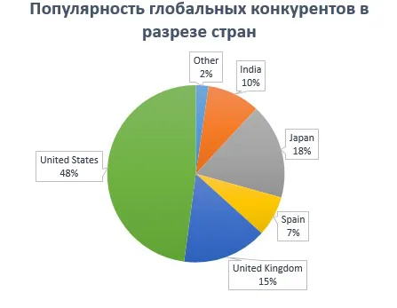
Чтобы набрать максимальную популярность в данных регионах, необходимо настроить интеграцию с наиболее популярными сетями. С помощью инструмента WebSite ranking в SimilarWeb вы можете посмотреть пять наиболее посещаемых социальных сетей. Для этого нужно установить в качестве категории «Social Network» и выбрать интересующий регион.
Чтобы узнать, какой охват аудитории социальной сети, воспользуйтесь сервисом StatCounter. Информация по интересующим нас регионам выглядит следующим образом:
США
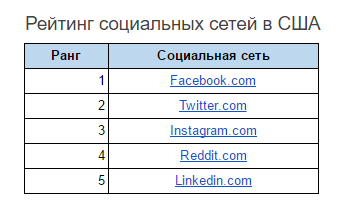
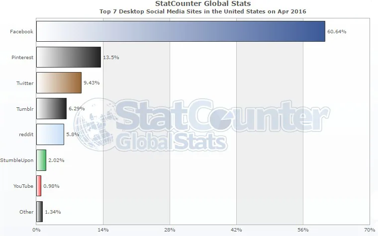
Япония
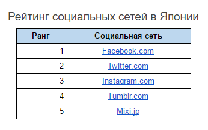
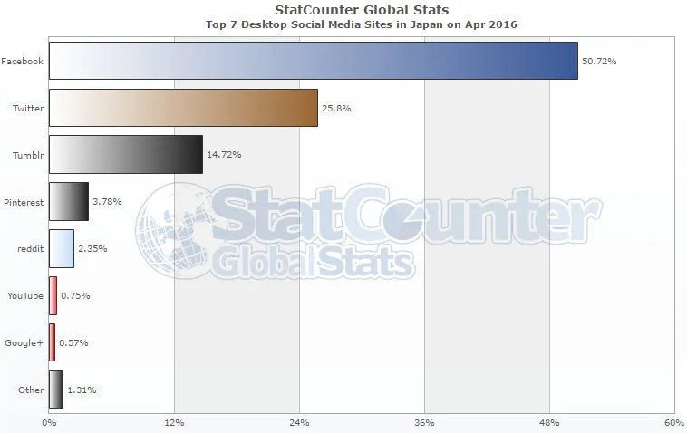
Англия
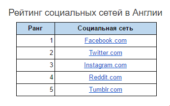
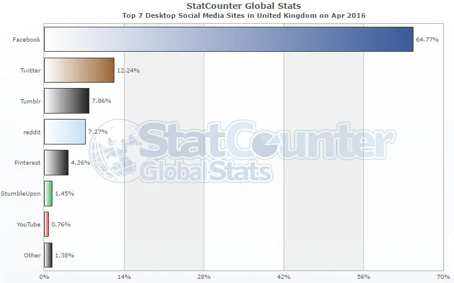
Индия
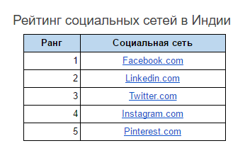
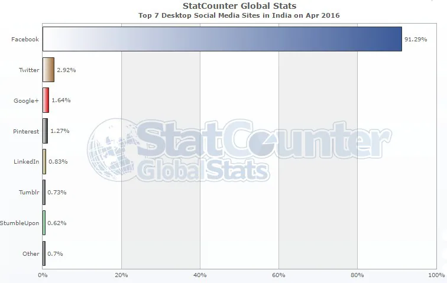
Испания
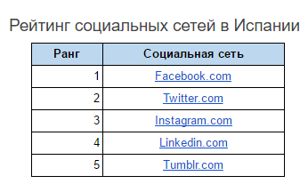
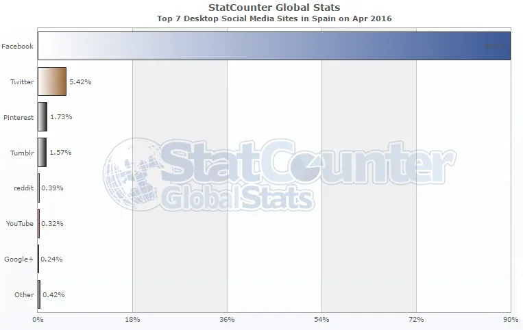
Безусловно, Facebook — самая популярная социальная сеть в странах, где востребованы глобальные конкуренты анализируемого сервиса. Эта сеть покрывает от 50% до 91% от всей интернет-аудитории. В отдельных регионах достаточно большой охват имеют Twitter, Pinterests, Tumblr, Linkedin, Instagram и Reddit, в связи с чем перед выходом на глобальный уровень продукт должен наладить интеграцию c перечисленными социальными сетями.
2.2. Локальные конкуренты
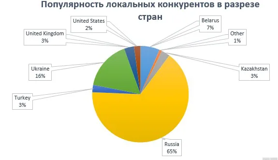
Локальные конкуренты наиболее популярны в России — 65% трафика приходится именно на этот регион. На втором месте — Украина (16%), а на третьем — Беларусь (7%). Достаточно привлекателен для продвижения нового сервиса Казахстан, поскольку ни один из анализируемых конкурентов пока не завоевал внимание интернет-аудитории этой страны. Посмотреть динамику роста проникновения интернета в регионах можно с помощью хранилища публичных данных от Google.
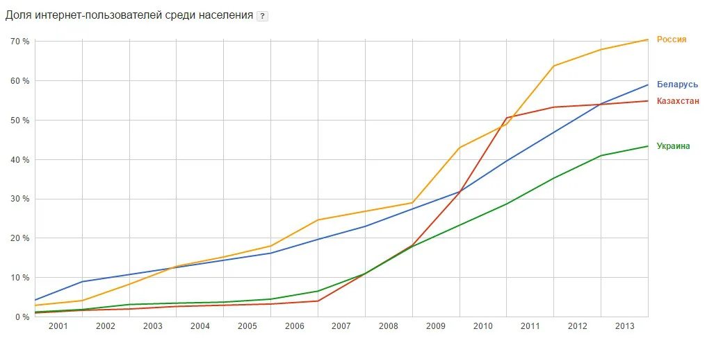
Проникновение интернета в Казахстане на данный момент значительно выше, чем в Украине: по данным TSN Web Index, в августе 2015 года интернет-аудитория Казахстана составила 3,5 млн человек и большая часть пользователей активно используют социальные сети.
Рассмотрим рейтинг социальных сетей в целевых регионах. К сожалению, данных о посещаемости социальных сетей в Беларуси и Казахстане SemilarWeb не предоставляет, поэтому в данных регионах можно опираться только на информацию StatCount.
Россия
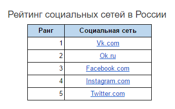
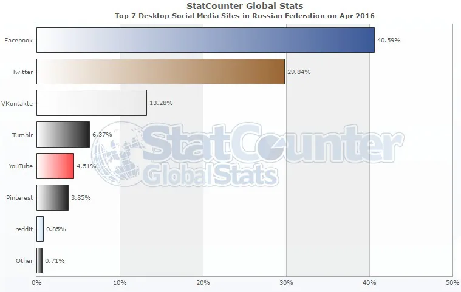
Украина
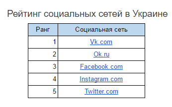
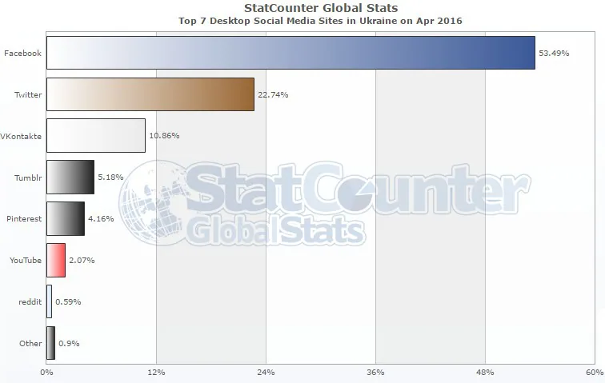
Беларусь
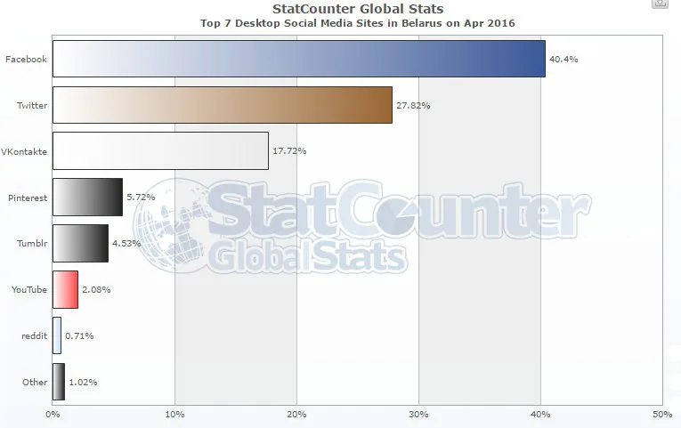
Казахстан
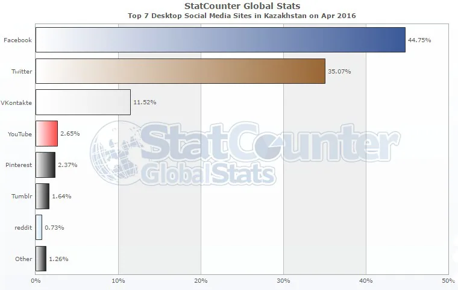
Итак, чтобы сервису конкурировать на локальном уровне, необходима интеграция с ВКонтакте, Одноклассниками, Facebook, Twitter, Pinterest и Tumblr.
3. Рейтинг каналов привлечения трафика
3.1. Глобальные конкуренты
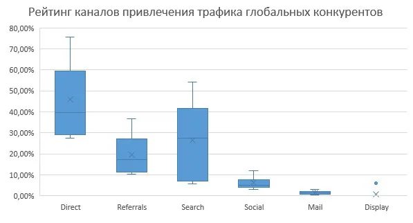
От 30% до 60% посетителей глобальных конкурентов являются постоянными и приходят на сайт по прямому каналу. Наиболее популярные каналы привлечения трафика — поиск и реферальные источники. Большую часть поискового трафика площадки получают из органики, но при этом Hootsuite, Sproutsocial и Buffer используют еще и платное продвижение (активнее всего использует этот способ Hootsuite — платный трафик составляет почти 10% от поискового). В среднем 20% трафика конкуренты получают благодаря рефералам, а значит в этой тематике эффективно работает контент-маркетинг и целесообразно выделять ресурсы на разработку качественного контента.
Рассмотрим, на каких информационных порталах можно публиковать статьи на тематику автоматизации SMM. По данным WebSite Ranking, в США наиболее интересны для продвижения следующие порталы:
- Cnet.com;
- Gizmodo.com;
- Lifehacker.com;
- Wired.com;
- Engadget.com;
- Digitaltrends.com;
- Arstechnica.com;
- Pcworld.com;
- Techcrunch.com;
- Zdnet.com.
Для покрытия аудитории в Великобритании стоит публиковаться на следующих ресурсах:
- Cnet.com;
- Techradar.com;
- Pcadvisor.co.uk;
- Trustedreviews.com;
- Theregister.co.uk;
- Gizmodo.com;
- Lifehacker.com;
- Engadget.com;
- Wired.com;
- Gsmarena.com.
В Японии топ-3 наиболее посещаемых новостных площадок, посвященных IT-технологиям — внутренние, и публиковаться на них будет достаточно проблематично. Среди популярных у японцев международных ресурсов можно выделить:
- Cnet.com;
- Techcrunch.com;
- Netgeek.biz;
- Zdnet.com;
- Lifehacker.com;
- Wired.com.
Список подходящих для контент-маркетинга площадок в Индии.
- Gsmarena.com;
- Cnet.com;
- Yourstory.com;
- Gizbot.com;
- Lifehacker.com;
- Tech.firstpost.com;
- Techcrunch.com.
Список релевантных информационных площадок в Испании:
- Xataka.com;
- Ccm.net;
- Computerhoy.com;
- Gizmodo.com;
- Cnet.com;
- Genbeta.com;
- Naciodigital.cat.
3.2. Локальные конкуренты
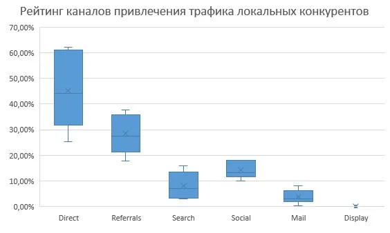
У локальных конкурентов, также как и у глобальных, от 35 до 60% посетителей — постоянные и приходят на сайт по прямому каналу. Тем не менее контент-маркетинг в локальном сегменте еще популярнее — 25-35% трафика, далее идут социальные сети 12-18%, и только потом поисковый трафик — 4-12%. Согласно полученным данным, среди локальных конкурентов контекстную рекламу в поиске дает только SMMplanner: 10% его поискового трафика приходится на платные объявления. В целом поисковый трафик составляет не более 12%, из чего можно сделать вывод, что данные ресурсы не уделяют большого внимания SEO-продвижению. Судя по всему, главный упор следует делать на контент-маркетинг.
Ниже приведен список наиболее релевантных площадок для публикаций на локальном уровне:
- 4Pda.ru;
- Geektimes.ru;
- Ixbt.com;
- 3Dnews.ru;
- Overclockers.ru;
- Na-Svyazi.ru;
- Mobile-Review.com;
- 3Ddd.ru;
- vc.com;
- cossa.ru.
Также следует запустить рекламные кампании в социальных сетях ВКонтакте, Одноклассники и Facebook, так как около 20% трафика локальных конкурентов приходится именно на этот канал.
Выводы
Общие выводы из проведенного конкурентного анализа сервисов автоматизации SMM.
- Самые популярные сервисы среди глобальных конкурентов — Hootsuite и Buffer, им принадлежит основная часть глобального рынка. Лидеры отрасли, в отличие от платформ с более низкой посещаемостью, используют поисковую рекламу как один из каналов привлечения трафика.
- Среди локальных конкурентов лидируют SMMplanner, SMMbox, KUKU и Amplifer. Эти площадки закрепили за собой лидирующие позиции благодаря активному росту трафика (от 130 до 380%) в течение последних шести месяцев.
- Основной канал привлечения посетителей, как у глобальных, так и у локальных конкурентов — контент-маркетинг. Публикация качественного контента на Cnet.com, Gizmodo.com, Ccm.net, Lifehacker.com и Wired.com поможет получить максимальный охват сразу по всем целевым регионам глобального сегмента. Для максимального эффекта от контент-маркетинга в СНГ стоит стучаться к редакторам 4Pda.ru, Geektimes.ru и Ixbt.com.
- Второй по значимости канал привлечения трафика локальных конкурентов — социальные сети. Запустив рекламу в ВКонтакте, Одноклассниках, Facebook, можно захватить часть трафика. Слабое место локальных конкурентов — поиск. Этот канал дает всего около 10%, то есть он еще не захвачен конкурентами и на данный момент имеет смысл запускать поисковые рекламные кампании, а также на этапе разработки сайта следовать консультациям SEO-специалистов для быстрого продвижения в органической выдаче.
- Практически никто из конкурентов анализируемого сервиса, как глобальных, так и локальных, не использует медийную рекламу, в связи с чем можно выделить небольшую часть бюджета для тестирования данного канала, который, как правило, направлен на повышение узнаваемости бренда.
- Один из самых интересных регионов для продвижения — Казахстан, интернет-аудитория которого насчитывает порядка 3,5 млн пользователей. Впрочем, данный регион пока практически не охвачен сервисами SMM-автоматизации, что гарантирует низкую конкуренцию в поисковой рекламе, а также потенциально большой охват пользователей.
- Для выхода на локальный рынок России, Украины, Беларуси желательно иметь интеграцию с ВКонтакте, Одноклассниками, Facebook, Twitter, Pinterest и Tumblr.
- Для выхода на глобальный уровень необходимо поддерживать интеграцию с Facebook, Twitter, Pinterests, Tumblr, Linkedin, Instagram и Reddit.
Итак, открытые источники данных дают достаточно много информации для изучения географии конкурентов и их каналов привлечения пользователей. Оценивайте, где самая низкая конкуренция, и грамотно распоряжайтесь своими ресурсами.
Оригинал публикации на блоге Netpeak
Статья попала в дайджест “Лучшие статьи по маркетингу за июнь 2016.” в раздел “Кейсы” по мнению академии webpromoexperts.com.ua.